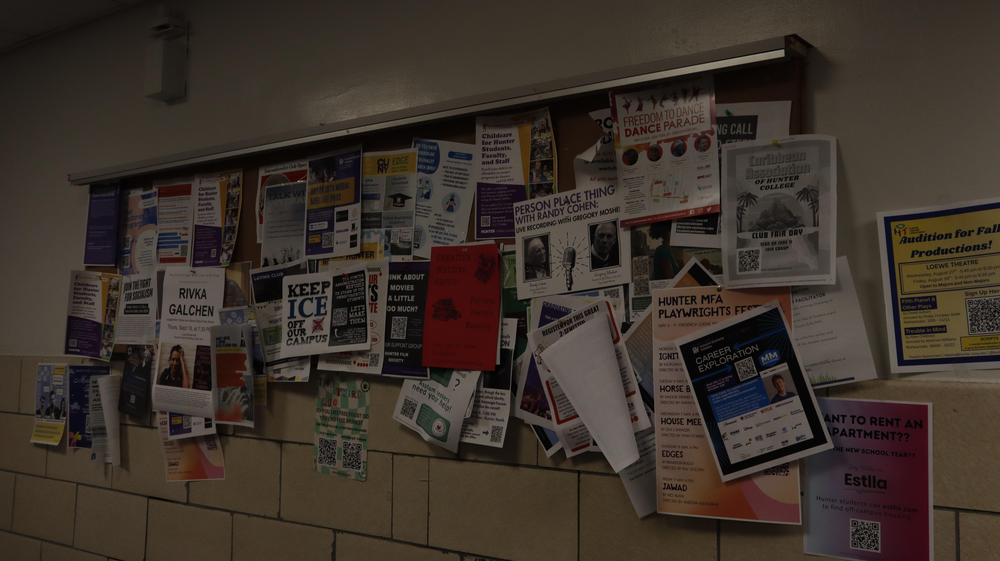

Orginal Photo:
I chose this photo because it has many different posters in it and i feel as though it makes this photo more unique with the incorpation of different shapes and colors. It adds a familiarity to the photo, i believe alot of people would feel comfort from seeing this because it reminds them of something they see frequently or a subject they take. The idea i had behind this photo was i wanted to make the posters stand out as if the writing on them were yelling at you. I added more color and a higher exposure to this photo, to fit the aesthetic with the rest of the photo but to make the bulletin board more present.
HOME